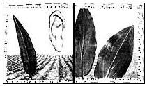

OPEN ROAD
THOUGH HE'S A FORMER FARMER and lives 30 miles south of Duluth in a small, flat town where the action revolves around the farm implement dealership, the sheriff's office and Art's Cafe, there is little that is outwardly rural about poet Robert Bly. He wears dress shirts and good pants most of the time now. Even so, his hands bear old earthen creases, telling you they once found their calling close to the soil.
And though he was a fierce antiwar activist in the Vietnam era and is now a well-traveled champion, not so much of men's rights as of their psyches, there is little that is overtly political or worldly about him either. He doesn't have a job in the ordinary sense; instead, he writes for a living, by hand, usually in a small, minimally furnished lakeside log cabin. "Innerworldly" may describe him better, for Bly is quintessentially a mythologist, a dweller among the large themes and deep currents that run through the rituals, dreams and languages of all of Earth's cultures. The real human world, he will tell you, is driven by myths and stories, expressions of an underlying, universal life force. Getting close to that force and embracing it is the ultimate trick.
Also, though raised Lutheran on a Minnesota farm in a Norwegian household probably not far from Lake Wobegon, there is little that is shy or inhibited about him. He cusses unabashedly. But that language is a facet of his relaxed, talking self. His poems and prose don't resort to such colloquial syncopation. Moreover, it is another kind of music-or rather its absence-that haunts him these days, as I discovered not long ago. We were talking about men, women, environment, the concept of "Mother Earth" and the threads that weave among them, when he abruptly veered into music. It was an unexpected and strangely poignant change of direction.
"I suspect that the reason a bona fide `men's movement' has lately emerged in our society," he was saying, "is that many men feel isolated-bereft and uncertain about their emotions and roles. Judging by the men who attend the workshops I help conduct on male identity, many males have come to recognize that they gave something away in early childhood-some vital element of self, a loss they are now grieving over and in some cases trying to recover. But I also think that many men gave away their connection to the earth. They are mourning that, too.
" "Maybe men are starting to get their act together because of the women's movement," I ventured.
He shook his head. The breeze skittered over the lake.
"No. Unlike a lot of observers, I don't think the men's movement arose as a reaction to the feminist movement. That came about partly because the rewards offered to women in this century are so thin-without substance or satisfaction. But, increasingly, men are finding their rewards to be equally thin. Also, they are starting to reject the domineering roles thrust upon them.
" His hair is wild silver, his father newly dead. He is 61, with two daughters and two sons. His wife is a child psychologist, Jungian trained. When he paused, I could hear insects droning outside, providing a kind of backyard music: persistent, discomfiting, fateful; as ineradicable as sin. "When thinking about traditional male modes of empire,
" he went on, "one connects a man's desire for power with owning land. It is said that in the old matriarchies women were less interested in the surrounding land than they were in the land between the houses. Of course, they were primarily interested in what went on inside the house, for that was where their power lay. Men, on the other hand, tended to go outdoors and act on the surrounding land.
"Take my generation, for example. I grew up at a time here in Minnesota that saw the advent of the huge tractors, a point at which we farmers moved into a power relationship with the land. As a boy I would go out with my brother and our two little mules. They pulled a small cultivator, on which we sometimes rode. It was slow going, often tedious. But, in its own way, it was also unforgettably charming. Such deep, endless days.
" "However, by the time I left the farm and my brother turned 40, he was driving an enormous machine, one complete with tape deck and air conditioning. He was almost totally sealed off-from the land, the air, everything. Indeed, his tractor cab resembled an executive's study. Not only that, but the tractor itself was huge and heavy; it packed down the soil so that even earthworms couldn't move through it. And water just puddled, unable to percolate down.
That machine struck me as a manifestation of the male mode of domination, exerting power over the earth. It contrasts, I should add, with another male mode, that of feeling with the earth, or into it or along with it. Consider the difference between what Buddha says and what is written in Genesis. Buddha says we are all brothers to the animals, whereas Genesis exhorts us to take dominion over the beasts and every living thing.
" Suddenly it hit me that Bly, who is biological father to his children, artistic father to his poems and, perhaps, substitute father to many of the men who attend his workshops, also feels himself in a way to be a father to the earth. Not in a patriarchal, egotistical or chauvinistic sense, by any means, but rather in a parental, communal one. An elder aware of this role and its obligations. Furthermore, it then seemed to me-again, in a flash, one wholly without evidence-that he was mourning something, something as close, fleshy and fragrant as an offspring. A bereaved father remembering intimate trusts and golden days? I was trying to think mythologically; could it be he was mourning the earth itself? That's when he turned to the subject of music. "To me," Bly began,
"one of the most amazing speculations about music is the notion that it has always come up out of the ground. It comes up into the people who work in the fields, who then create a dance. And when someone like Beethoven heard that music he elaborated on it, set it to various instruments. But its origin was the earth. "Then, curiously, in 1913 the music stopped coming. It's not that 1913 is a crucial year in other respects, at least not that I'm aware. It's just that the music stopped coming out of the ground. Bartok had to go spend 20 years in rural Hungarian villages to capture the last strains, which is what he did. But we could produce 20 Bartoks in this country, and there would be no place to go and listen.
"So, I believe Western romantic music ends with Bela Bartok, in 1913. Not because the younger composers have moved into the universities or the musical possibilities have been exhausted. But because the people working on the land no longer have that connection with it. The music in the ground doesn't have any human beings to move up to anymore. For me, the resulting silence is scary." LATER THAT AFTERNOON, I DROVE up alone to Duluth and took a boat tour of its harbor, perhaps the busiest shipping terminal in the Great Lakes. The harbor is ringed, on the inside, with vast grain elevators, ore piers, cement hoppers, coal docks and towering cranes-all crucial to the large scale, high-volume movement of earth generated produce and raw materials in and out of the Midwest.
Dwarfed as it was by the reality of behemoth ships and looming structures of lading and storage here in the harbor, the image of Bly's two little mules pulling a small cultivator somewhere inland long ago nevertheless sprang to mind, hovered for a moment, then dissolved. As I was standing at the rail, the only music I could hear came from a dance band aboard another vessel passing nearby, one embarked on a dinner cruise. Light rock, I think. Not anything like the music Robert Bly fears became locked within various seams and crevices of the earth sometime in 1913, lost forever, for want of dancers.
- Alfred Meyer
|
 |
|
|